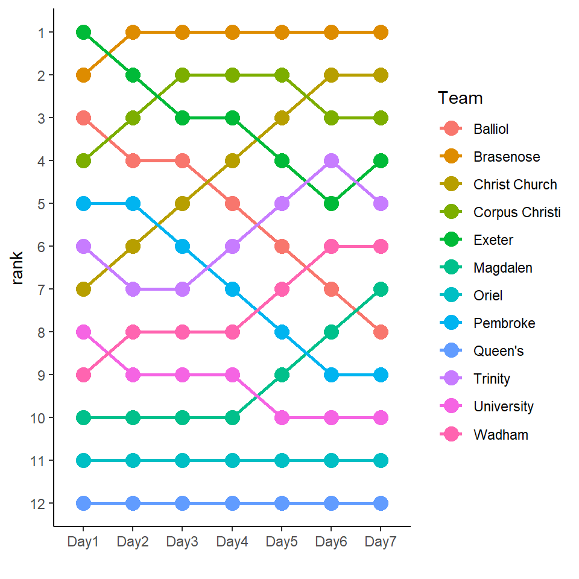
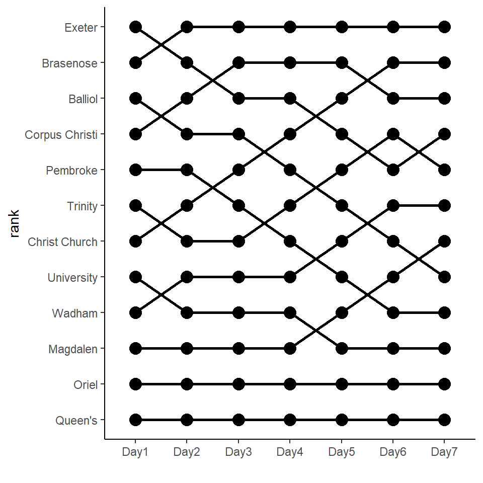

Bump charts are useful for looking at how rankings of a set of observations change over time. They are named (I think) after the visualizations of changes in rankings of Oxford and Cambridge college rowing crews during boat races. Because the river wasn’t wide enough to accommodate all the boats at once, they would start their races at different points on the river and their goal was to “bump” the boat in front. This would mean that they went up in ranking. This was visualized in charts like the one below. When lines cross, this means that the boats bumped and the boats switched rankings:
10.1 Basic Bump Chart in ggplot()
We can look at how to make a bump chart using basic ggplot2 syntax. We’ll recreate the above chart. Let’s import the data:
We have 12 rows of data. Each row is a college team. There are eight columns with the last seven being the ranking of each college on that day. To turn the data into a plottable format, we need to have a long data frame with columns team, day and rank.
# A tibble: 6 x 3
Team day rank
<chr> <chr> <dbl>
1 Exeter Day1 1
2 Exeter Day2 2
3 Exeter Day3 3
4 Exeter Day4 3
5 Exeter Day5 4
6 Exeter Day6 5
We can now plot day against rank using a combination of geom_line() and geom_plot(). First we will create a plot color with a legend depicting each college. We use scale_y_reverse() to plot the rankings on the y-axis from highest rank at the top of the plot to lowest ranking at the bottom.
ggplot(dfl, aes(x = day, y = rank, color = Team, group = Team)) +geom_line(lwd=1) +geom_point(size=4) +xlab("")+scale_y_reverse(breaks=1:12) +theme_classic()

However, I think this plot is a little too colorful. Alternatively, we could create the plot in one color and add labels on the y-axis that have the names of the original ranks of teams. This would be more similar to the original plot:
ggplot(dfl, aes(x = day, y = rank, group = Team)) +geom_line(lwd=1) +geom_point(size=4) +xlab("")+scale_y_reverse(breaks=1:12, labels = df$Team) +theme_classic()

There are probably several stylistic changes we could make to this plot to make it more visually appealing. It’s often nice with bump charts to have the dots be empty circles. We can do this by adding smaller white points on top of the points that we already plotted:
Another thing that is often beneficial in bump charts is to highlight individual groups of interest. This is particularly useful if there are lots of subjects. For example, let’s say we are interested in the change in ranking of the Trinity boat over time. What we would like to do is make the other lines more transparent and to make Trinity’s line bolder. To do this, we use alpha() to set the transparencies of the other crews and I also made their colors grayer. Then I create a dataframe that only includes Trinity’s data to plot over the top of our plot, and change the color of their points and lines and thicken their line to emphasize it.
I like the classic angular lines aesthetic of bump charts. However, there may be use cases where we wish to have curved lines joining points. This can be done effectively with the ggbump package.
The below code creates the generic plot for the college bumps dataset above. I’ve kept the scale_y_reverse() in the code so that we have the highest ranked team (i.e. 1) at the top of the y-axis, and the lowest ranked at the bottom. The geom_bump() function adds a curved line rather than straight line for each subject across time. The other difference is that I have made the day column numeric by using as.numeric(factor(day)) rather than just day. Although geom_bump() should work with characters, I have found that converting them to numeric variables works best.
library(ggbump)ggplot(dfl, aes(as.numeric(factor(day)), rank, color = Team)) +geom_bump(size=1) +scale_y_reverse(breaks=1:12)
Below I have customized this plot with some additional code. I have decided to create a palette of 12 colors using the viridis palette, though having 12 separate colors for a discrete category is probably pushing the limits of what is easily interpretable. These colors would be added in alphabetical order as a default as the Team variable is a character. This would mean that Balliol would have the darkest purple color and Wadham the lightest yellow. A better way of assigning color would be by initial or final rank. I decided to assign here by initial rank. Therefore I converted the Team variable to a factor and made the levels the order of ranks on the first day. The easiest way to do this was to use unique(dfl$Team) as they appear in rank order of the first day in the dataset.
library(viridis) #for color scale#refactor Team to be in rank order (same as order appears in dataset)dfl$Team <-factor(dfl$Team, levels =unique(dfl$Team))ggplot(dfl, aes(as.numeric(factor(day)), rank, color = Team)) +geom_bump(size=1) +geom_point(size=4) +geom_point(color ="#FFFFFF", size =2) +scale_x_continuous(breaks=1:7) +scale_y_reverse(breaks=1:12, labels = df$Team) +scale_color_manual(values=viridis(12,option="C")) +xlab("Day") +ylab("Rank") +theme_classic() +xlab("Day") +ylab("") +theme_classic() +theme(axis.ticks.y =element_blank(),axis.line.y =element_blank(),axis.text.y =element_text(size =rel(1.5)),legend.position ="none" )
10.2.1 Practical Example - Babyname Popularity Over Time.
Below is an example of using the ggbump package to plot changing trends of babyname popularity over time. The code for this was inspired by a plot of European Flight traffic made by Stephan Teodosescu.
Essentially what we want to do is find the rankings in popularity of different babynames between two timepoints. We will plot the top 12 names at the final timepoint and track their evolution in popularity from the first timepoint. By only including these names, we avoid too much clutter in the chart and we are able to see how stable or otherwise the rankings are. I chose to look at the popularity of male names between 2012 and 2017.
We first get the ranking of all male names between 2012 and 2017. The data come from the babynames package:
# A tibble: 84,665 x 4
year name total rank
<dbl> <chr> <int> <int>
1 2012 Jacob 19069 1
2 2013 Noah 18241 1
3 2014 Noah 19286 1
4 2015 Noah 19613 1
5 2016 Noah 19082 1
6 2017 Liam 18728 1
7 2012 Mason 18964 2
8 2013 Jacob 18148 2
9 2014 Liam 18451 2
10 2015 Liam 18355 2
# ... with 84,655 more rows
We can see that for the years 2012-2017, the names “Jacob”, “Noah” and “Liam” were the most popular.
To limit our chart to just the 12 most popular names in 2017, we can collect those names by filtering for rank and year and using pull() to grab the names:
Always a difficulty with 12 discrete groups is what colors to assign to each in the chart. Here, I create a vector of colors using the pals color palette package:
Liam Noah William James Logan Benjamin Mason Elijah
"#332288" "#6699CC" "#88CCEE" "#44AA99" "#117733" "#999933" "#DDCC77" "#661100"
Oliver Jacob Lucas Michael
"#CC6677" "#AA4466" "#882255" "#AA4499"
Now for the actual plot. The use of geom_point(), geom_bump(), scale_y_reverse(), and scale_color_manual() are similar to how we have used them before. Notably in scale_y_reverse() we make the breaks go from 80 to -2. This is to ensure that Oliver gets plotted in 2012 as it’s ranking was just inside that value then. The -2 is to ensure that we can annotate the 2012 and 2017 at the top of the plot.
The coord_cartesian() is used to make sure that our plot stretches across the canvas appropriately.
Next, the theme elements dictate the color of the plot background and the positioning of the title. The x-axis and y-axis titles are removed with labs() and the title’s name is added.
Finally, we add text to the plot. The rankings and names of each line are positioned using geom_text() from the ggtext package, and the labels “2012” and “2017” are manually positioned using annotate().